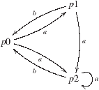
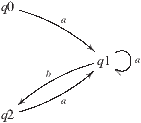

Proof search for a defined atom is done by unfolding the definition for the atom, i.e. by replacing it with the body of the definition. Since (mutually) recursive definitions are allowed, it is possible that loops occur in the proof search. The same goals can also arise several times in different searches. By default, Bedwyr doesn’t detect any of these issues, which makes the proof search much longer than needed, or even infinite. To address this, Bedwyr can use tabling to keep records of certain proved, disproved or ongoing formulae, hence avoiding redundant search.
Tabling is used in both prover-0 and prover-1 (see Section 7.5). The current implementation restricts tabling to atomic goals with no occurrence of existential variables in prover-1. In prover-0, only ground atomic goals (no occurrence of existential or universal variables) are tabled.
The use of tabling as a memoization mechanism is straightforward: once an atom is proved or disproved, it is marked as such in the table, and this result can be reused in any later computation. On the other hand, while the proof search for an atom is still ongoing, the atom is marked as working, and any new occurrence of it will mean that a loop in the search has been found. This can have several interpretations, depending on whether we consider the predicate as inductive or co-inductive. In the former case, that means that the atom is not provable, since otherwise it would contradict the well-foundedness of inductive definitions. In the latter case, we would have a proof of the atom. This simple loop checking makes it possible to do proof search for some non-terminating definitions.
Tabling is by default not enabled in Bedwyr. To enable it, two keywords
are provided:
inductive and
coinductive. To use
tabling on a predicate
p, one of them has to be added in the
declaration of
p, in the header of the definition block.
Note that, while one can mix tabled and non-tabled predicates in the
same definition block by only applying such a keyword to some of the
predicates, the scope of the inductive or co-inductive trait is the
whole block of mutually recursive definitions. This means that a
definition block cannot contain both inductive and co-inductive
predicates at the same time, as it might lead to contradictions – see
[MT03] for more details.
The command
#show_table pred. allows one to inspect the
contents of
pred’s table outside of any computation, when it
only contains proved and disproved atoms. The output displays one
formula per line, with the prefix [P] for proved and
[D] for disproved. The formulas are abstracted over by their
generic and universal variables. The relative scopings of generic and
universal variables is not displayed although that information is
present internally: such information is needed, for example, to avoid
that a proof of (∀ x∇ y . p x y) is used as a proof for
(∇ y∀ x . p x y). The displaying of this information will
be fixed with planned extensions of the tabling mechanisms that will
implicitly allow extra axioms on ∇ (see [Tiu06]) in
order to be able to inspect in a meaningful way one predicate’s table
from another logic program.
For example, if we define
| Define inductive neq : nat -> nat -> prop by neq X Y := X = Y -> false. Define query1 : prop, query2 : prop by query1 := forall x, nabla y, neq x y ; % true query2 := nabla y, forall x, neq x y. % false |
and ask the queries
query1. and
query2. , we end
up with the following puzzling table:
| ?= #show_table neq. Table for neq contains (P=Proved, D=Disproved): [P] nabla x1, x2\ neq x2 x1 [D] nabla x1, x2\ neq x2 x1 ?= |
The two entries are indistinguishable by the user, but internally some extra information does separate them.
Tables can be reset with the commands
#clear_table and
#clear_tables.
Two means of extracting tabled information exist in Bedwyr. The first
is the
#save_table command, which is similar to
#show_table but outputs the table in a definition file as a
pair of predicates (10),
proved and
disproved. This way, it is possible for Bedwyr to reason
about its own tables.
% Table for path contains : Define proved : (s -> s -> prop) -> s -> s -> prop, disproved : (s -> s -> prop) -> s -> s -> prop by disproved path (state 1 1 0) (state 5 5 1) ; disproved path (state 1 1 0) (state 5 5 1) ; [...] disproved path (state 1 1 0) (state 5 5 0) ; disproved path (state 2 1 1) (state 5 5 0).
The other method is the
#export command. It outputs the
whole set of tabled atoms of the current session in a structured way
(11), not unlike the trees of multicut
derivations described in [Nig08]. Note that this tree can
contain atoms from multiple predicates, and therefore cannot be built if
some tables were selectively removed by
#clear_table.
<?xml version="1.0" encoding="UTF-8"?> <!DOCTYPE skeleton SYSTEM "bedwyr.dtd"> <?xml-stylesheet type="text/xsl" href="bedwyr-skeleton.xsl"?> <skeleton timestamp="1365771164"> <son value="disproved" id="57"> <atom>path (state 3 1 1) (state 5 5 1)</atom> <son value="disproved" id="113"> <atom>path (state 1 1 0) (state 5 5 1)</atom> <son value="disproved" id="33"> <atom>path (state 2 1 1) (state 5 5 1)</atom> <loop value="disproved" ref="57"> path (state 3 1 1) (state 5 5 1) </loop> [...]
Version 1.3 introduced tabling modulo theorems, where simples lemmas can be used to improve the efficiency of tabling in two ways:
Lemmas obviously have to be admissible by the definitions; they are
merely shortcuts that ease the access to results too complex for Bedwyr
to compute quickly or at all. The first examples that come to mind are
symmetry or transitivity lemmas. They can be added to files as
theorems, using the Abella syntax, and the subsequent text is ignored
until the command
Qed is met. That way, parsing and
checking the proof is left to Abella.
In some cases the table contents has important uses: for example, once
the co-inductive predicate
bisim (for bisimulation in some
of the example files) has been checked, the table for the predicate
bisim describes a bisimulation. We give here a simple
example of checking bisimulation of finite state automata. The example
is distributed with Bedwyr as bisim.def. For more sophisticated
examples involving the π-calculus, we refer the reader to
6.
Consider the following transition system (taken from [Mil99], page 19):
|   |
The state
p0 and
q0 are bisimilar (see
[Mil99] for a proof). This transition system and the
bisimulation relation are encoded in Bedwyr as shown in
12. Using this definition of bisimulation, Bedwyr is
able to prove that
p0 and
q0 are indeed
bisimilar (13).
Define next : state -> trans -> state -> prop by next p0 a p1; next p0 a p2; next p1 b p0; next p1 a p2; next p2 a p2; next p2 b p0; next q0 a q1; next q1 a q1; next q1 b q2; next q2 a q1. Define coinductive bisim : state -> state -> prop by bisim P Q := (forall P1 A, next P A P1 -> exists Q1, next Q A Q1 /\ bisim P1 Q1) /\ (forall Q1 A, next Q A Q1 -> exists P1, next P A P1 /\ bisim P1 Q1).
The table produced gives exactly the bisimulation set
needed to prove the bisimilarity of
p0 and
q0,
i.e. the set {(p0,q0), (p0, q2), (p1,q1), (p2,q1) }.